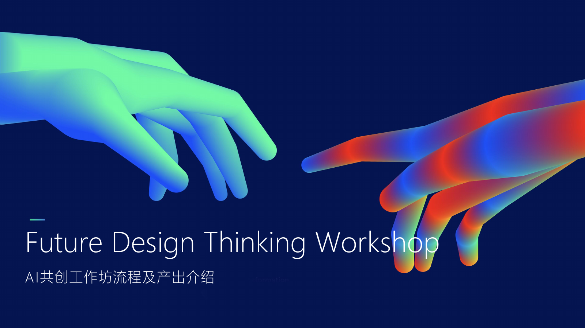

Knowledge
AIGC、设计与农业跨界授课，建立共同知识底座。
国家艺术基金 2026 · AI 助农共创营
Generative AI for Rural Revitalization Design Talent Program
2026 年度国家艺术基金项目。从设计未来学视角出发，把生成式人工智能转化为可理解、可感知、可落地的乡村振兴与助农设计方案，面向全国遴选青年创意设计人才共创。
Mission
本培训汇聚高校为主体、含行业一线的青年创意设计人才与 AI、设计、农业领域专家，通过跨学科协作，将生成式人工智能、乡村产业、地方文化与公众体验连接成一个可创作、可展示、可落地转化的助农设计实验场。围绕《设计未来学视角下的人工智能创作逻辑》展开教学。
AIGC、设计与农业跨界授课，建立共同知识底座。
跨文化团队围绕六个方向推进概念、原型与展陈方案。
优秀成果进入成果展示，形成乡村振兴设计的全景叙事。
后续成果可继续孵化，并面向乡村产业与公众传播验证。
Six Tracks
Rural Vision & Future Narratives
Smart Agriculture & Digital Production
Agri-product Brand & Cultural-creative Design
Rural Life & Experience Design
Digital Village & Rural Platforms
Rural Culture & Sustainable Design
Program Rhythm
跨学科授课建立 AIGC、设计、农业与乡村振兴的共同语言。
学员深化概念、完成试验并形成可展示的助农设计原型。
通过路演、点评、遴选与成果转化推进农业设计成果落地。
Corpus Library
AI 育种、遥感监测、无人农场、农业大模型与病虫害识别等生产技术信号。
AIGC 生成式设计、农产品品牌包装、乡村 IP 孵化与短视频直播助农信号。
农村电商、供应链溯源、数字普惠金融、智慧治理与乡村数据基础设施信号。
非遗民艺数字化、乡村文旅体验、生态农业碳中和与公共空间设计信号。
Case Library
AI 育种、无人农场、农业大模型与智能识别等真实落地项目与企业实践。
农产品品牌设计、乡村 IP、AIGC 包装海报与短视频营销的真实案例。
农村电商、数字治理、溯源与智慧文旅平台的真实落地项目。
非遗活化、乡村公共空间、生态农业与社区设计的真实实践。
AI Co-creation Workshop
浏览并选择未来信号。
选择或输入地方挑战，AI 可辅助扩展。
生成 Provotyping Card 与 Interpretation 句式。
生成未来新闻标题和情境图像。
从 2050 目标倒推 2040 与 2030 行动。



Codex Skill System
这套 skill 把课程工作流拆成一个总控大 skill 和多个可独立调用的小 skill。学生可以从未来信号开始一步步完成方法产物，也可以在方案完成后继续生成项目文档、PPT、效果图、交互原型、故事板、视频和本地项目档案。
总控大 skill，负责串联完整 Future Design Thinking 流程：从主题界定、未来信号、STEEP、本地挑战、未来解释、Provotyping、明日头条、Backcasting，到最终方案和后期制作。
项目级总控小 skill，负责把前期方法、后期呈现、资产归档和最终交付检查连成一个连续项目工作流。
完成未来信号、STEEP、本地挑战、信号挑战配对、未来解释和概念卡。
把概念转化成可感知的未来新闻和可执行的倒推路线。
根据项目类型推荐合适呈现组合，并调用文档、PPT、图片、原型、视频等制作 skill。
把设计方法产物、生成资产、提示词、源文件和最终交付物保存到学生本地项目文件夹。
Local Archive
skill 会把项目整理为 00_project-brief、01_method-process、03_visual-assets、04_prototypes、05_documents、06_presentations、07_video-audio、08_delivery 和 09_ai-process-log，确保过程、资产和最终提交都能被追踪。
future-design-projects/<team-project>/
Download
推荐整套下载，保留总控 skill 与小 skill 的调用关系；也可以打开单个 skill 查看它的 SKILL.md。
Use $skill-installer to install from repo future-design-lab/future-design-lab.github.io these paths: skills/future-design-thinking-workshop, skills/future-design-project-controller, skills/future-signal-scout, skills/steep-analysis, skills/local-challenge-framing, skills/signal-challenge-pairing, skills/future-interpretation-builder, skills/provotyping-card-builder, skills/tomorrow-headline-builder, skills/backcasting-roadmap-builder, skills/project-presentation-router, skills/project-asset-archive, skills/project-delivery-checker. Restart Codex after installation.
Outputs
由未来信号和地方挑战组合形成，用于界定机会与冲突。
用一句可讨论、可修改的未来解释串联 A、B、C 要素。
以 2030/2040/2050 的新闻标题呈现可感知未来。
以县长、企业负责人、个体行动者等角色倒推行动路径。
Tools
如果在使用过程中遇到技术问题、Token 充值、API 配置等，可以通过微信扫码联系 manta.ai 获取帮助。
 微信扫码添加
微信扫码添加
Student Works
本期「AI 助农 · 乡村振兴共创营」学员高度聚焦「平谷大桃」这一地方 IP，围绕助农与乡村振兴，在 Manta 平台上完成 16 位学员、约 130 张真实创作。以下按创意方向集中呈现学员作品与真实创作诉求。
把平谷大桃塑造成可延展、可量产的角色 IP 与品牌数字人。
以平谷大桃为原型，塑造一只 Pixar 风格 3D 蜜桃吉祥物，并扩展为一整副“桃趣扑克牌”——把 K/Q/J/A、大小王与红心/黑桃/方块/梅花四花色逐一角色化，形成可收藏的桃文化 IP 礼盒。
为“平谷智慧果园”设计 AI 守护精灵“桃小智”——融合成熟平谷桃、智能机器人与孩童气质的品牌数字人，并系统化输出多款吉祥物与三视图设定。
从散装批发到品牌礼盒，为大桃建立视觉体系与产品叙事。
把平谷大桃从“散装批发”升级为“品牌礼盒”，围绕“溯源 / 桃礼 / 鲜甜”主题做系列海报、礼盒、文创、快闪店与社媒，并用传统市场 vs 精品礼盒的对比强化品牌价值。
让桃与景泰蓝、畲族服饰等传统文化嫁接，落到可触摸的文创物。
打造文创品牌“TAOTAO / 桃跑了”，将平谷桃与北京景泰蓝非遗结合，开发桃形陶瓷、香薰、帆布袋、礼盒，并设计快闪店与桃园手作工作坊（陶艺 / 点蓝 / 拓染 / 咖啡）。
设计以桃为头的 chibi IP 角色，穿着畲族传统服饰，做成文创手办，融合水果意象与民族文化。共 6 张角色手办设计，探索“桃 IP × 民族文化”的文创方向。
本期生成图片未在网关日志中留存；保留创作方案与真实 Query。
用故事、漫画、表情包与未来新闻，把助农议题变成可传播的内容。
用儿童绘本讲述“巨桃”的奇幻故事，并延展出平谷桃品牌 VI、包装与一座“桃主题游乐园”，把农产品变成可阅读、可游玩的文旅 IP。
用黑白四格漫画讲述“土地神在荒山种出神桃”的故事，并延展出 2028“神桃节”马拉松海报、微博热搜卡与桃精灵吉祥物，构建节庆事件叙事。
把不同桃品种拟人化为萌系表情包（小蟠 / 老久保 / 阿黄 / 滑溜溜 / 小白），配合小红书爆款封面与名画潮流二创，探索年轻化的助农传播。共 11 张表情包与社媒 / 潮流图。
本期生成图片未在网关日志中留存；保留创作方案与真实 Query。
从趣味文化（关公战秦琼影视级场景）切入到严肃科普（科普中国风新闻 banner），并把成果部署为在线网页“瞬息桃源”。交互式「平谷桃生命周期」科普原型：点击种下大桃 → 越冬积累需冷量 → 对麦克风吹气唤蜂授粉 → 手温催熟 → 成熟采摘。
🌐 上线网页《瞬息桃源》 ↗用艺术家作品集 banner 与“当 AI 替桃农卖桃”新闻头图，讲述 AI 助农的近未来场景。共 2 张图，勾勒 AI 助农的未来媒体叙事。
本期生成图片未在网关日志中留存；保留创作方案与真实 Query。
以设计未来学方法产出未来叙事物料：雕塑家网站主视觉、2050《北京日报》版面、工作坊总结信息图。共 3 张图，聚焦“从方法到呈现”的未来设计表达。
本期生成图片未在网关日志中留存；保留创作方案与真实 Query。
以桃为媒介的公共雕塑与装置，探索“以桃论生命”的在地表达。
以桃为媒介进行公共艺术与装置探索：先用蟠桃“鲜—熟—腐”记录生命周期，再提出可拼装 / 动态的巨型桃雕塑与互动装置。
探索桃与城市 / 自然结合的公共雕塑：建筑 + 热带园林铜雕、百年桃树 + 不锈钢构成主义雕塑。共 2 张公共雕塑方案图。
本期生成图片未在网关日志中留存；保留创作方案与真实 Query。
用小程序、AR 触发等数字交互，打通线上导流与线下体验。
设计平谷大桃采摘微信小程序（地图找园、详情预订），并配套桃形冰箱贴文创，打通“线上导流 — 线下采摘”。以「地图 + 排行榜」帮助游客发现平谷区采摘园。
打造国潮品牌“逃桃花源”，以桃花源意象做发布主视觉与桃仔精灵形象，并设计 AR 触发 marker，让桃文化可被扫码互动。共 5 张品牌 + AR 素材。
本期生成图片未在网关日志中留存；保留创作方案与真实 Query。
以下为本期在 Manta 网关日志中留存的真实生成作品图（瀑布流展示）。